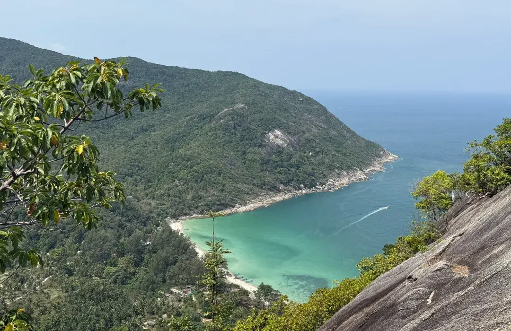
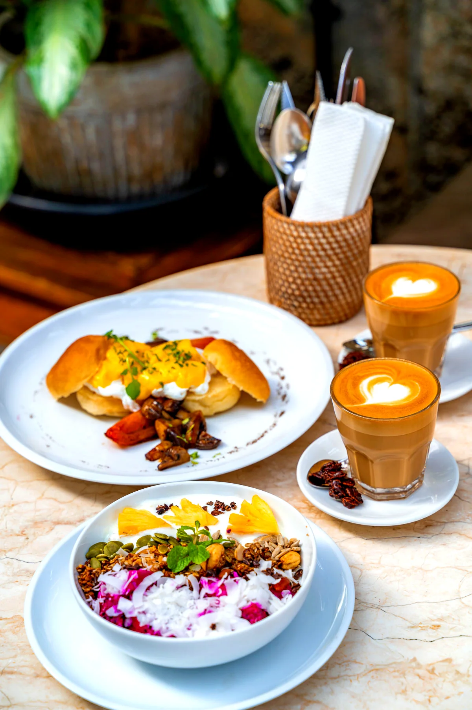

Where to Eat in Thong Sala, Koh Phangan: The Complete Food Guide (2026)
Where to eat in Thong Sala, Koh Phangan: the best Thai food, seafood, cafés, bakeries, world cuisine and night markets in the island's main town and ferry port.
Editorial review by Bruno Potier
Most visitors first discover Thong Sala through its ferry terminal. They arrive from Koh Samui or Koh Tao, collect a scooter and head straight for the beaches — rarely stopping long enough to discover one of Koh Phangan's most exciting places to eat.
That's a mistake. Thong Sala isn't simply the island's transport hub — it's where Koh Phangan comes together.
Why Eat in Thong Sala?
Before sunrise, fishing boats unload their catch while cafés welcome early risers with fresh coffee and warm pastries. By lunchtime, local workers fill family-run restaurants, the Fresh Market buzzes with traders and chefs choosing the day's ingredients, and by evening the streets fill with the aromas of grilled seafood, fragrant curries and tropical desserts.
Nowhere else on Koh Phangan offers such a range of dining within walking distance. Whether you're looking for authentic Thai food, a memorable chef's table, freshly landed seafood, Korean barbecue, artisan coffee, homemade pastries or one of the island's liveliest night markets, Thong Sala has something for every taste and budget.
Unlike the quieter villages of Hin Kong or Sri Thanu, Thong Sala feels unmistakably local. It's where residents shop, families gather for dinner, travellers from across the island cross paths, and many of Koh Phangan's best chefs choose to open their restaurants. For food lovers, it's one of the island's essential destinations.
The Short Answer
If you're short on time, these are the places we'd point you to first.
| Looking for… | Our recommendation |
|---|---|
| Authentic Thai | Muai's Thai Traditional Cooking |
| Northern Thai | At Chiang Mai |
| Chef's table | DAO by Chef Nir Mesika |
| Seafood | Salt. Seafood Restaurant & Bar |
| Fresh seafood lunch | La Ceviche's |
| Korean | Seoul Vibe |
| French | Ratatouille · Bistrot Riviera |
| Japanese | Wasabi |
| Burmese | thanaka |
| Middle Eastern | Baharat – House of Shawarma |
| Brunch | Bubba's Coffee |
| Bakery | Nira's Home Bakery |
| Vegan | Pure Vegan Heaven |
| Street food | Phantip Night Market |
| Saturday experience | Thong Sala Walking Street |
| Sunset drinks | Beach Lounge |
| Cocktails | Seadation |
Thong Sala at a Glance
Although compact, Thong Sala has several distinct dining areas:
- Thong Sala Pier — restaurants within walking distance before or after the ferry.
- Fresh Market — seafood, local produce and La Ceviche's.
- Phantip Night Market — the island's best everyday street-food destination.
- Chinese Street — home to the Saturday Walking Street Market.
- Town centre — cafés, bakeries, Thai restaurants and international cuisine.
- Ao Bang Charu Beach — Beach Lounge and waterfront sunset dining.
Because everything is close together, it's easy to combine several experiences in one visit — brunch at Bubba's Coffee, an afternoon in the Fresh Market, sunset cocktails at Beach Lounge, then bespoke drinks at Seadation.
Eat Like a Local
To experience Thong Sala the way many residents do, start with coffee and breakfast at Bubba's Coffee or Croissant & Ko before wandering the Fresh Market, where vendors prepare the day's produce and fishermen sell their morning catch.
For lunch, choose one of the town's authentic Thai kitchens or discover regional flavours at At Chiang Mai. As the sun sets, head to Ao Bang Charu Beach for a drink at Beach Lounge, then return to the centre where Phantip Night Market and the Saturday Walking Street offer some of the island's best street food. Finish with a bespoke cocktail by P'Bao at Seadation, one of the island's favourite cocktail bars.
Why You Can Trust This Guide
We live on Koh Phangan year-round and regularly revisit the restaurants featured here. Rather than listing every place to eat, we've selected those that consistently stand out for their food, atmosphere and hospitality. Some are long-established local favourites; others are newer restaurants bringing fresh ideas — but all have earned their place through consistency rather than hype. As with all Dar Mansour Journal guides, this article is reviewed and updated regularly to reflect new openings and the island's evolving food scene.
Best Thai Restaurants in Thong Sala
Thong Sala is one of the strongest areas on the island for authentic Thai cuisine — from long-established family kitchens to Northern Thai specialities. For the island as a whole, see our best Thai restaurants in Koh Phangan guide.
Muai's Thai Traditional Cooking Academy & Restaurant
Muai's is one of Koh Phangan's best-known ambassadors for authentic Thai cuisine. Internationally recognised for its cooking academy, it has become a destination in its own right for beautifully prepared family recipes served with genuine Thai hospitality — from fragrant Green Curry and Pad Thai to Holy Basil Stir-Fry, Massaman and Mango Sticky Rice.
Best for — Authentic Thai · Cooking classes · Families
Price — ฿
Location — Thong Sala town centre, about 5 minutes from the pier. View on map ↗
No Name Kitchen Phangan
Between Thong Sala and Baan Tai, No Name Kitchen has quietly built one of the strongest reputations on the island. The modest name hides consistently excellent Thai cooking, warm service and generous portions made fresh to order — the classics simply done exceptionally well.
Best for — Authentic Thai · Everyday dining · Great value
Price — ฿
Location — Between Thong Sala and Baan Tai, about 5 minutes from the centre. View on map ↗
At Chiang Mai
Inside the Phangan Food Court, At Chiang Mai specialises in authentic Northern Thai recipes rarely found elsewhere on Koh Phangan. Its signature Khao Soi — a rich coconut curry noodle soup from Chiang Mai — has earned a loyal following, and it's one of the island's best places to discover Thailand's regional diversity.
Best for — Northern Thai · Khao Soi · Great value
Price — ฿
Location — Inside the Phangan Food Court, Thong Sala. View on map ↗
Thonglar Koh Phangan
Part local beer garden, part neighbourhood restaurant, Thonglar is one of those places where locals and visitors naturally come together over honest Thai comfort food. The open-air setting is relaxed by day, while weekends bring live bands, DJs and a lively crowd that gives the place a completely different energy. The kitchen does classic Thai favourites exceptionally well — its Khao Man Gai is widely considered one of the best on Koh Phangan, with tender poached chicken, fragrant rice cooked in rich chicken stock and a deeply savoury clear broth, while the crispy pork and noodle dishes have earned a loyal local following. Come for the food, stay for the atmosphere — especially Friday and Saturday evenings.
Best for — Authentic Thai comfort food · Khao Man Gai · Beer garden · Live music
Price — ฿
Location — Thong Sala, a few minutes from Wasabi. View on map ↗
Auntie's Restaurant
Sometimes the simplest restaurants become the ones people return to most. Auntie's has long been appreciated for exactly that — honest home-style Thai cooking, generous portions and friendly service at prices that stay refreshingly reasonable.
Best for — Traditional Thai · Budget-friendly · Everyday meals
Price — ฿
Location — Thong Sala, near the town centre. View on map ↗
Maddy's Kitchen
A welcoming neighbourhood restaurant serving both Thai favourites and international comfort food, Maddy's Kitchen has earned a loyal following for its relaxed atmosphere and genuinely friendly hospitality — the kind of place many visitors return to several times during a stay.
Best for — Families · Comfort food · Casual dinners
Price — ฿
Location — Thong Sala town centre, walking distance from Phantip Night Market. View on map ↗
Chef-Led & Contemporary Dining
Thong Sala is known for casual restaurants and markets, but it's also home to one of Koh Phangan's most remarkable dining experiences.
DAO by Chef Nir Mesika
For many food lovers, DAO is worth travelling across the island for. Inside a beautifully restored traditional Thai house, Chef Nir Mesika welcomes just sixteen guests around an intimate communal chef's table. Drawing on experience in New York and Tel Aviv, he creates an ever-changing tasting menu inspired by Mediterranean, Israeli and Thai influences, using carefully selected local ingredients — one of the island's most original and memorable meals.
Best for — Chef's table · Food lovers · Special occasions
Price — ฿฿฿
Good to know — Only sixteen seats · seasonal tasting menu · reservations essential, well ahead.
Location — Thong Sala, about 5 minutes from the pier. View on map ↗
CATCH Restaurant & Gastro Bar
Blending international cuisine with creative cocktails, CATCH offers a stylish yet relaxed experience in the heart of Thong Sala. The menu ranges from premium meats and fresh seafood to contemporary sharing plates, and the cocktail programme makes it as good for drinks with friends as for dinner.
Best for — Cocktails · Contemporary dining · Groups
Price — ฿฿฿
Location — Thong Sala town exit, walking distance from Seoul Vibe Korean Restaurant. View on map ↗
Upstairs Café & Restaurant
Above the lively streets of Thong Sala, Upstairs offers a quieter setting away from the bustle below. Its menu combines Thai favourites with international classics, making it a versatile choice for coffee, lunch or dinner — the elevated terrace is especially pleasant in the cooler evening hours.
Best for — All-day dining · Coffee · Casual meals
Price — ฿฿
Location — Thong Sala town centre, near the Saturday Walking Street. View on map ↗
Best Seafood in Thong Sala
Thanks to its fishing port and daily fresh market, Thong Sala is one of the island's best places for seafood — whether you want refined waterfront dining or fish straight from the morning's catch.
Salt. Seafood Restaurant & Bar
A short walk from Thong Sala Pier, Salt. has become one of the island's leading destinations for contemporary seafood. It pairs the freshest local catch with Mediterranean influences — oysters, premium fish, creative sharing plates — alongside a thoughtful cocktail and wine list, in a stylish waterfront room suited to a long lunch, sunset drinks or a memorable dinner.
Best for — Seafood · Date nights · Cocktails · Special occasions
Price — ฿฿฿
Location — Thong Sala waterfront, walking distance from the pier. View on map ↗
La Ceviche's – Ceviche Bar
Few restaurants can honestly say their seafood travels only a few metres to the plate. Inside Thong Sala Fresh Market, La Ceviche's prepares bright ceviches with fish delivered daily by local fishermen, plus prawns and seasonal produce from neighbouring stalls — one of the freshest seafood lunches on the island and a perfect stop while exploring the market.
Best for — Fresh seafood · Lunch · Food lovers
Price — ฿฿
Location — Inside Thong Sala Fresh Market, 5 minutes from the pier. View on map ↗
International Cuisine
One of Thong Sala's greatest strengths is its diversity. Within a few streets you can travel from Korea and Japan to Myanmar, the Middle East and Europe without leaving the town centre.
Seoul Vibe Korean Restaurant
One of the island's best Korean restaurants, Seoul Vibe serves authentic comfort food in a welcoming, contemporary setting — generous portions of Korean BBQ, bibimbap, crispy fried chicken, kimchi stews and homemade side dishes. Friendly service and consistently good food have made it a favourite with residents and long-term visitors.
Best for — Authentic Korean · Groups · Casual dinners
Price — ฿฿
Location — Thong Sala town centre, walking distance from Phantip Night Market. View on map ↗
Baharat – House of Shawarma
For Middle Eastern flavours, Baharat has become one of the island's favourite addresses — freshly baked pita, homemade falafel, slow-roasted shawarma and grilled meats in generous, flavour-packed portions, equally good for a quick lunch or an easy dinner.
Best for — Shawarma · Falafel · Middle Eastern cuisine
Price — ฿
Location — Thong Sala, near the Fresh Market. View on map ↗
Wasabi Japanese Restaurant
Reliable, consistent and always fresh, Wasabi has earned a loyal following for quality sushi, sashimi and classic Japanese dishes — one of the safest choices for Japanese food on Koh Phangan, whether for a light lunch or a relaxed dinner.
Best for — Sushi · Sashimi · Japanese cuisine
Price — ฿฿
Location — Thong Sala (second branch in Haad Son). View on map ↗
thanaka
One of Thong Sala's most distinctive kitchens, thanaka introduces diners to the culinary traditions of Myanmar. Family-run and full of character, it specialises in authentic Burmese recipes — fragrant curries, noodle dishes and the famous Lahpet Thoke, Myanmar's fermented tea-leaf salad. If you're after something genuinely different, it's one of the island's most rewarding meals.
Best for — Burmese cuisine · Authentic flavours · Something different
Price — ฿
Location — Thong Sala town centre, near Phantip Night Market. View on map ↗
Bistrot Riviera
Bringing a little French Riviera charm to Koh Phangan, Bistrot Riviera serves French and Mediterranean classics in an elegant yet relaxed atmosphere — a refined alternative to the town's more casual eateries, whether for a leisurely lunch, a glass of wine or a romantic dinner.
Best for — French cuisine · Wine · Couples
Price — ฿฿
Location — Thong Sala, near the town centre. View on map ↗
Ratatouille
Inspired by traditional French bistros with Mediterranean influences, Ratatouille focuses on carefully prepared seasonal cuisine in an intimate setting. The menu changes with available ingredients, so each visit is a little different — a favourite among many of the island's long-term residents.
Best for — French-inspired cuisine · Seasonal menus · Relaxed dinners
Price — ฿฿
Location — Thong Sala town centre. View on map ↗
BASIL Restaurant & Be High Lounge
One of the more unusual dining experiences in Thong Sala, BASIL brings flavours from Eastern Europe alongside an excellent cocktail lounge — a good option to discover something outside the island's more familiar cuisines before continuing the evening with drinks upstairs.
Best for — Eastern European cuisine · Cocktails · Something different
Price — ฿฿
Location — Thong Sala, a few minutes from the pier. View on map ↗
Looking for Moroccan Cuisine?
Although not in Thong Sala itself, Dar Mansour – Morocco's Kitchen is only a short drive west, between Hin Kong and Sri Thanu. For authentic Moroccan family cuisine — slow-cooked tajines, traditional couscous and one of the island's most intimate settings — it's well worth the short journey (see Where to Eat Near Thong Sala below).
Burgers, Comfort Food & Vegan
Thai cuisine takes centre stage, but Thong Sala also has an excellent selection of comfort food, gourmet burgers and creative plant-based dining.
Mojo's
A favourite with residents and returning visitors, Mojo's has earned its reputation for quality burgers, slow-smoked barbecue and generous comfort food — fresh beef, toasted buns, homemade sauces and well-cooked fries. With branches in Thong Sala and Chaloklum, it's a dependable choice after a day exploring the island.
Best for — Burgers · Barbecue · Families · Groups
Price — ฿฿
Location — Thong Sala town centre (also in Chaloklum). View on map ↗
Pure Vegan Heaven Thongsala
Koh Phangan is one of Thailand's leading wellness destinations, and Pure Vegan Heaven reflects that reputation — colourful plant-based cooking from fresh ingredients, from smoothie bowls and burgers to curries and salads. Even non-vegans often leave impressed by the flavour.
Best for — Vegan cuisine · Healthy dining · Wellness travellers
Price — ฿฿
Location — Thong Sala, a few minutes from the town centre. View on map ↗
Cafés, Breakfast & Bakeries
Thong Sala has quietly become one of the island's best places for breakfast and specialty coffee, with cafés that open earlier than most restaurants. For the island-wide picture, see our best breakfast & brunch in Koh Phangan guide.
Bubba's Coffee
Few cafés have shaped Koh Phangan's coffee culture as much as Bubba's — carefully sourced beans, expertly brewed specialty coffee and generous brunch dishes, from avocado toast and smoothie bowls to pancakes and homemade baked goods, all prepared with real consistency.
Best for — Brunch · Specialty coffee · Digital nomads
Price — ฿฿
Location — Thong Sala town centre (also in Baan Tai; roastery in Haad Yao). View on map ↗
Croissant & Ko
One of Thong Sala's newest cafés, Croissant & Ko specialises in beautifully laminated pastries, quality coffee and light brunch dishes in a bright, modern space — an excellent stop before the ferry or for a slower morning over coffee and fresh pastries.
Best for — Breakfast · Croissants · Coffee · Brunch
Price — ฿
Location — Thong Sala, near the ferry pier. View on map ↗
Nira's Home Bakery
A long-established favourite among residents, Nira's has been serving homemade cakes, pastries and baked treats for many years. Relaxed, welcoming and consistently good, it's perfect for afternoon coffee, dessert or something sweet to take away.
Best for — Homemade cakes · Coffee · Pastries
Price — ฿
Location — Thong Sala town centre, walking distance from Phantip Night Market. View on map ↗
More Great Bakeries
If fresh bread and pastries are the priority, Thong Sala has more options worth discovering. French Bakery Phangan ↗ prepares classic French breads, croissants and viennoiseries, while German Bakery by Achim ↗ specialises in traditional German breads, pretzels and European-style baking. Together with Nira's and Croissant & Ko, they make Thong Sala one of the island's strongest destinations for breakfast and baked goods.
Street Food & Night Markets
Street food is one of the great pleasures of eating in Thong Sala. Unlike much of the island, where restaurants spread along the coast, Thong Sala brings dozens of vendors together in a compact area — easy to sample Thai dishes, seafood, desserts and international snacks in a single evening. If you're here for one night, don't miss the markets.
Phantip Night Market
Open every evening, Phantip is the island's best everyday street-food destination. Dozens of stalls prepare grilled seafood, Pad Thai, curries, satay, fresh fruit shakes, Thai desserts and international dishes in a lively open-air food court where visitors and locals eat side by side — affordable, varied and full of atmosphere.
Best for — Street food · Families · Budget dining
Location — Thong Sala town centre, a few minutes from the pier. View on map ↗
Thong Sala Walking Street (Saturday Market)
Every Saturday evening, Chinese Street closes to traffic and becomes the island's liveliest weekly market. Unlike Phantip, which focuses on food, the Walking Street combines street food with local artisans, handmade crafts, clothing, live music and small producers — grilled seafood, homemade desserts, tropical fruit and regional specialities. If your visit lands on a Saturday, it's one experience not to miss.
Best for — Street food · Local atmosphere · Shopping · Live music
Location — Chinese Street, Thong Sala old town. View on map ↗
Phangan Food Court
Open throughout the day, Phangan Food Court gathers Thai and international kitchens under one roof — home to At Chiang Mai, alongside Japanese, seafood, grilled meats, burgers and vegetarian options. Reliable, casual and affordable, it's one of the easiest ways to please a group with different tastes.
Best for — Groups · Variety · Casual dining
Location — Thong Sala, on the main road towards Baan Tai. View on map ↗
Beachfront Dining & Cocktail Bars Near Thong Sala
A few minutes from the town centre you'll find several excellent places for sunset drinks, dinner by the sea or expertly crafted cocktails — the perfect way to end a day exploring the island.
Beach Lounge
Just south of Thong Sala Pier, overlooking Ao Bang Charu Beach, Beach Lounge offers one of the closest beachfront dining experiences to the town centre. By day it's a relaxed beach café for lunch with sea views; as sunset approaches, the mood shifts with chilled DJ sets, creative cocktails and Mediterranean-inspired cuisine beside the water. The kitchen draws particular praise for its generous portions and slow-roasted lamb, and the peaceful setting suits couples, groups or one last drink before the ferry.
Best for — Sunset dinners · Beachfront cocktails · Live DJs · Couples
Price — ฿฿
Location — Ao Bang Charu Beach, a few minutes south of Thong Sala Pier. View on map ↗
Seadation
Along Thong Sala's main road, Seadation has quietly become one of Koh Phangan's favourite cocktail destinations. The experience centres on bartender P'Bao, whose reputation reaches well beyond the island — rather than ordering from a menu, many regulars simply describe the flavours they enjoy and let him create a completely bespoke cocktail. Refreshing, spirit-forward, tropical or unexpected, every drink is made with genuine creativity and precision, in an intimate room with good music.
Best for — Signature cocktails · Bespoke creations · Cocktail lovers · Evening drinks
Price — ฿฿
Location — Thong Sala main road, a few minutes from Phantip Night Market. View on map ↗
Sound Garden
If your evening continues after dinner, Sound Garden is one of Thong Sala's favourite meeting places for music lovers — carefully selected DJs, occasional live performances and an open-air setting where the atmosphere builds gradually through the evening without ever feeling overwhelming.
Best for — Live music · DJs · Cocktails · Evening atmosphere
Price — ฿
Location — Thong Sala, near the town centre. View on map ↗
Eating Before the Ferry
Almost everyone passes through Thong Sala Pier, yet few travellers realise how many good restaurants sit within a few minutes of the terminal. If you have an hour or two before departure, there's no need to settle for convenience alone.
- Breakfast — Bubba's Coffee · Croissant & Ko · Nira's Home Bakery
- Lunch — Muai's Thai Traditional Cooking · At Chiang Mai · Baharat – House of Shawarma
- Seafood — Salt. Seafood Restaurant & Bar · La Ceviche's
- Sunset before boarding — Beach Lounge
- One last cocktail — Seadation
Most are less than five minutes from the pier — easy to enjoy without rushing.
Where to Eat Near Thong Sala
Thong Sala's central location is one of its advantages: within ten to fifteen minutes by scooter you can reach several of the island's best dining areas, each with its own atmosphere.
- Hin Kong — ten minutes west, one of the island's favourite areas for sunset dining, with beachfront restaurants and west-coast views. See our Hin Kong food guide.
- Sri Thanu — a little further, Koh Phangan's wellness hub, known for specialty cafés, healthy cuisine and international restaurants. See our Sri Thanu food guide.
- Between Hin Kong & Sri Thanu — Dar Mansour – Morocco's Kitchen sits on the road between the two, a short drive from Thong Sala: slow-cooked tajines, hand-rolled couscous and warm Moroccan hospitality in an intimate, riad-inspired setting.
For the island as a whole, see the best restaurants in Koh Phangan and where to watch the sunset.
Practical Tips
- Arrive hungry. Thong Sala offers more variety than anywhere else on the island — explore the markets before committing to one restaurant.
- Saturday is special. If you're here at the weekend, plan your evening around the Saturday Walking Street.
- Most places are walkable. Once you've parked the scooter, many restaurants, cafés and markets are easy to explore on foot.
- Check opening hours. Island hours change through the year, especially in low season — confirm on Google Maps before travelling.
- Bring cash. Most restaurants take cards or QR payments, but many market stalls and small family businesses are cash only.
Final Thoughts
Thong Sala may be the first place most visitors see, but it deserves to be far more than a stop between the ferry and the beach. It's the island's culinary crossroads — traditional Thai family kitchens beside chef-led tasting menus, fishermen delivering the catch metres from contemporary seafood restaurants, and artisan cafés, world cuisine and lively markets all within a few walkable streets. Whether you're staying nearby or simply passing through, take the time to explore beyond the pier. Some of Koh Phangan's most memorable meals are waiting in the place many travellers overlook.
Frequently asked questions
Where is the best place to eat in Thong Sala?
For authentic Thai food, we recommend Muai's Thai Traditional Cooking and No Name Kitchen Phangan. For a memorable chef-led experience, DAO by Chef Nir Mesika is one of Koh Phangan's finest restaurants, while seafood lovers should head to Salt. Seafood Restaurant & Bar or La Ceviche's inside the fresh market.
Is Thong Sala good for breakfast?
Very. Thong Sala has one of the island's strongest breakfast scenes, with Bubba's Coffee, Croissant & Ko, Nira's Home Bakery and several excellent bakeries opening early each morning.
Is Phantip Night Market worth visiting?
Yes. Open every evening, Phantip Night Market is one of the best places on Koh Phangan to sample affordable Thai street food, grilled seafood, tropical fruit, desserts and local specialities.
What is the difference between Phantip Night Market and the Saturday Walking Street?
Phantip Night Market is open every day and focuses almost entirely on food. The Saturday Walking Street takes place once a week along Chinese Street, combining food stalls with artisan crafts, clothing, live music and local producers. If you visit on a Saturday, both are worth experiencing.
Where do locals eat in Thong Sala?
Many residents favour smaller Thai restaurants such as Muai's, Auntie's Restaurant and No Name Kitchen Phangan, along with the food stalls around the Fresh Market and Phantip Night Market.
Where can I eat before catching the ferry?
Several good restaurants sit within a few minutes of Thong Sala Pier, including Salt., La Ceviche's, Beach Lounge, Bubba's Coffee and Croissant & Ko — easy for one last meal before leaving Koh Phangan.
How far is Thong Sala from Hin Kong and Sri Thanu?
Only a few minutes by scooter. Thong Sala sits on the west side of the island, a short ride from Hin Kong and Sri Thanu, where you'll find beachfront dining, sunset bars and Dar Mansour.
Taste the story around our table
The best chapters are written over a slow Moroccan dinner. Reserve your evening at Dar Mansour.
Continue the journey

Best Things to Do in Koh Phangan (2026): A Local Guide Beyond the Full Moon Party

Best Cafés in Koh Phangan (2026): Specialty Coffee & Island Café Culture